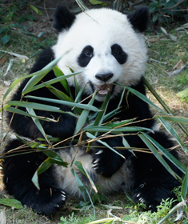

Un site sur les pandas
Par Antonio Calapez, 1TTR1

Les pandas sont des mammifères classés dans la famille des ursidés. Ils vivent exclusivement dans le centre de la chine dans les régions montagneuses. Son nom chinois est "grand chat ours".
Lors du dernier recensement datant de 2002 on comptait 1596 pandas. On compte 341 pandas en captivité. On espère pour le futur pouvoir réintroduire plus de pandas dans la nature.
Caractéristiques: Ils font de 1m50 à 1m80, à peu près 100 kg. Le panda est herbivore, il a un très bon odorait ainsi qu'un ouïe très fin. Il peut être blanc et noir ou roux
Les différentes races de pandas
Le panda géant
Panda qui mange du bambou
Le panda roux

C'est la masquotte de firefox